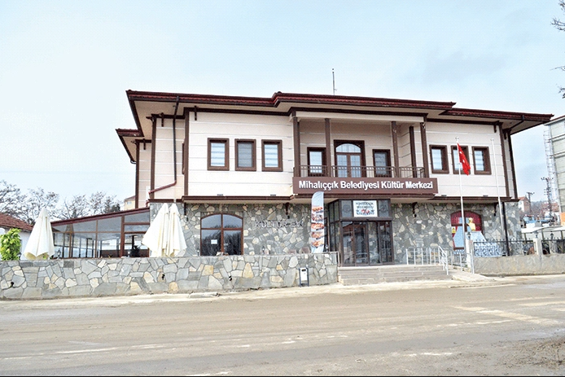
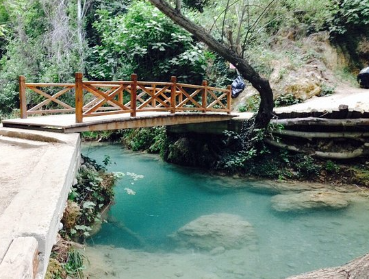

MİHALIÇÇIK
Mihalıççık, Eskişehir ilinin bir ilçesidir.
1915'e kadar Ankara'nın ilçesiydi ve Kurtuluş Savaşı'nda çok kısa bir süre Yunan işgaline uğramıştır.
Kuzeyde Ankara’nın Nallıhan, Beypazarı ve Polatlı ilçeleriyle komşudur.
Mihalıççık isminin Köse Mihal'den veya oğlu Mihalgazi'den geldiği
yönünde pek çok rivayet olmakla beraber henüz kesin tarihi belge elde edilememiştir.
İlçe halkı geçimini tarım, hayvancılık, madencilik ve hizmet sektörlerinden karşılamaktadır.
İlçe toprakları genellikle dağlık ve ormanlıktır.
Arazi yapısı, ulaşım yollarına uzak olması ve sanayisinin olmayışından dolayı ilçe merkezi,
doğallığını kaybetmemiş tipik bir Anadolu kasabasıdır.
Tam karasal iklime sahip olup yazları sıcak, kışları ise yoğun yağışlı
ve gece gündüz sıcaklık farkı çok olan bulunduğu rakım itibarıyla yazın dahi akşamları serin rüzgarları barındıran bir ilçedir.
Kuzeyinde Sündiken dağları uzanır. Sakarya Nehri ilçenin kuzeyinden akar.
Bu nehir üzerinde bulunan Gökçekaya barajları ve elektrik santralleri de Mihalıççık ilçesindedir.
İlçe merkezi iki mahalleden oluşur ve çarşısı bütünleşik bir yapıya sahiptir.
İlçede genellikle müstakil, yatay mimari yerleşimi bulunup son yıllarda birçok apartman yükselmiş ve yarı dikey mimari yapıya geçiş yapılmıştır.
İlçede bölgesel küçük ölçekli marketlerin yanı sıra zincir marketler ve birçok branşta hizmet veren işletmeler bulunmaktadır.
Fast-food kültürü tam oturmamış ilçede birden fazla ev yemeği ve meşhur Mihalıçcık Kavurması yapan lokantalar bulunmaktadır.
Mihalıçcık Bazlaması adı verilen yöreye ait ekmek üreticileri de aynı çarşı merkezinde bulunmaktadır.
İlçe kuzey girişinde 14 yataklı devlet hastanesi ve aynı kampüste bulunan dört adet aile hekimi muayenehanesi,
Büyükşehir Belediyesi itfaiye istasyonu ve şantiyesi çarşı merkezinde bir adet Ziraat Bankası şubesi, bir adet PTT şubesi,
Büyükşehir Belediye Başkanlığına ait Sular idaresi müdürlüğü ve bölgesel doğalgaz idaresi, üç adet akaryakıt istasyonu,
iki adet eczane ve İlçe güney girişinde yaşlılar köşkü, merkezinde halk kütüphanesi, ilçenin kuzey kısmında ise Kalburcu mesire alanı bulunmaktadır.
İlçe tarımında kirazın rolü yıllardir önemini kaybetmemiş ve her geçen yıl kiraz üreticisi artmıştır,
her yıl temmuz ayında yukarıda bahsi geçen mesire alanında belediye tarafından Kiraz Festivali düzenlenmektedir.
İlçenin Beypazarı bağlantı yolu üstünde taze balık restoranları bulunmaktadır.
Bunların yanı sıra belediyeye ait ilçe merkezinde 25 odalı otel, ilçe güney girişinde cafeler,
aile çay bahçeleri ve restorantlar ilçe kuzey girişinde halk arasında Yelken diye tabir edilen tepede ilçenin panaromik olarak
izlenebilecegi restoran ve aile çay bahçesi, ilçe merkezinde spor salonu bulunmaktadır.
Yunus Emre'ye ait türbe ve mezar da ilçeye bağlı Yunusemre mahallesinde bulunur.
Bu mahallede ayrıca TCDD tren istasyonu mevcuttur. Anadolu Selçuklularından kalan Çalçı Cami,
Türk-İslam mimarisinin güzel örneklerinden biri olup, Çalçı köyünde bulunmaktadır. Ayrıca yine Selçuklular zamanından
kalan Çalçı Çeşmesi bulunmaktadır. İlçede Ilıcalar (Yarıkçı) mahallesinde de şifalı sularıyla ünlü kaplıcalar vardır.
İlçenin kuzeyinde Gürleyik Doğal Şelalesi bulunmakta ve son dönemlerde çevre bölge ve illerden piknik, kamp ve yüzme amaçlı
birçok doğal güzellik tutkunun uğrak noktası durumuna gelmiştir. Bunların yanı sıra Ömer Mahallesi
sınırları içerisinde bulunan balık avı ve bol oksijene sahip bir piknik yapmak isteyen vatandaşların kullandığı çevresi ormanlık Ömerköy Göleti ve
aynı bölgede bulunan tam öğün yemek hizmeti olan, göle sıfır turizm ve av oteli de sessiz, orman ve göl manzaralı bir tatil için ziyaretçilerine hizmet vermektedir.
Koyunağılı mahallesinde linyit kömürü, Kavak mahallesinde krom, Bahtiyar mahallesinde manyezit,
Kartal mevkii ve Sorkun mahallesinde Boksit, İlçenin güney sırtında ve Yayla mahallesinde manyezit madenleri çıkarılır.
Mihalıççık yakınlarında kaolin madeni de çıkar
rılır. İlçenin Koyunağılı mahallesinde Yunusemre Termik Santrali bulunmaktadır.


Tepe Başı İlçesi Hakkında Bilgiler Almak İçin Tıklayınız
Anasayfaya Dönmek için Tıklayınız.